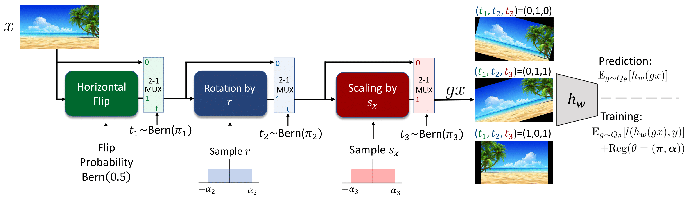
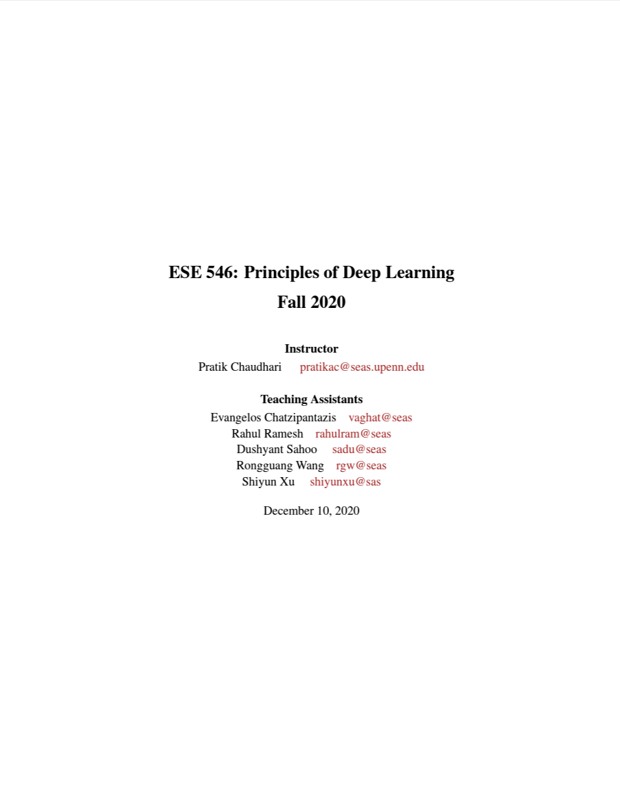

|
Evangelos Chatzipantazis Hello visitor! I am Evangelos. From the Greek Ev (< εύ) + angelos (< ἄγγελος) which translates to "the messenger of good news". So yes; you are in the right place! I am currently a PhD Student in Computer Science at the legendary Grasp Lab at the University of Pennsylvania. Under the advising of Kostas Daniilidis, I work on Geometric Deep Learning and its applications to 3D Computer Vision. Before that, I did my undergraduate studies in the field of Electrical Engineering and Computer Science at the National Technical University of Athens, under the supervision of Prof. Petros Maragos, where I worked on spectral methods for image segmentation. |

|
ResearchMy current research focus lies on Equivariant Deep Learning for 3D Computer Vision. More broadly, I am interested in problems that fuse geometry, statistics and physics especially in the form of inductive biases on deep neural networks. I am also very interested in the use of Artificial Intelligence for Science. |

|
SE(3)-Equivariant Attention Networks for Shape Reconstruction in Function Space
Evangelos Chatzipantazis*, Stefanos Pertigkiozoglou*, Edgar Dobriban, Kostas Daniilidis The Eleventh International Conference on Learning Representations ICLR, 2023 project page / slides / arXiv / openreview Local shape modeling and SE(3)-equivariance are strong inductive biases to reconstruct scenes of arbitrarily many objects appearing in random poses even when a network is trained on single objects in canonical pose. |
|

|
Learning Augmentation Distributions using Transformed Risk Minimization
Evangelos Chatzipantazis*, Stefanos Pertigkiozoglou*, Kostas Daniilidis, Edgar Dobriban, Transactions on Machine Learning Research TMLR, 2023 arXiv / openreview We propose a new Transformed Risk Minimization (TRM) framework as an extension of classical risk minimization. Our TRM method (1) jointly learns transformations and models in a single training loop, (2) works with any training algorithm applicable to standard risk minimization, and (3) handles any transforms, such as discrete and continuous classes of augmentations. To avoid overfitting when implementing empirical transformed risk minimization, we propose a novel regularizer based on PAC-Bayes theory. We propose a new parametrization of the space of augmentations via a stochastic composition of blocks of geometric transforms. The performance compares favorably to prior methods on CIFAR10/100. Additionally, we show empirically that we can correctly learn certain symmetries in the data distribution (recovering rotations on rotated MNIST) and can also improve calibration of the learned model. |

Graph Neural Networks for Multi-Robot Active Information Acquisition
|
Mariliza Tzes, Nikolaos Bousias, Evangelos Chatzipantazis, George J. Pappas IEEE International Conference on Robotics and Automation, ICRA, 2023 (Outstanding Paper Award in Multi-Robot Systems) project page / video / paper / arxiv We propose the Information-aware Graph Block Network (I-GBNet), an Active Information Acquisition adaptation of Graph Neural Networks, that aggregates information over the graph representation and provides sequential-decision making in a distributed manner. Numerical simulations on significantly larger graphs and dimensionality of the hidden state and more complex environments than those seen in training validate the properties of the proposed architecture and its efficacy in the application of localization and tracking of dynamic targets. |
TeachingI am very passionate about teaching. Both from the mentoring perspective and as a means to convey knowledge in a clear, concise manner. I am a big fan of Richard Feynman's teaching techniques. |
|

|
Teaching Assistant, ESE546 Principles of Deep Learning Fall 2019, 2020
Class Notes (Co-authored with Prof.Pratik Chaudhari) |
|
|
Teaching Assistant, CIS680 Advanced Machine Perception, Fall 2019
Website (under Prof. Jianbo Shi) |
| Teaching Assistant, ESE650 Learning in Robotics, Spring 2019 under Prof. Kostas Daniilidis. |
|
Credits for the template Jon Barron |